如图4.4所示的蜡烛图线具有明显特点。它们的下影线较长，而实体较小，并且在其全天价格区间里，实体处在接近顶端的位置上。在本图上，我们同时列出了黑白两种蜡烛线。有趣的是，这两条蜡烛线都既可能是看涨的，也可能是看跌的，具体情况要由它们在趋势中所处的位置来决定。在这两种蜡烛线中，不管是哪一个，只要它出现在下降趋势中，那么，它就是下降趋势即将结束的信号。在这种情况下，这种蜡烛线称为锤子线，意思是说“市场正用锤子夯砸底部”。请看图4.5。在日语里，这类蜡烛线原来的名称是“探水竿”。这个词在日文中大体的意思是“试一下水的深浅。”
在图4.4所示的两种蜡烛线中，无论哪一种，如果出现在上冲行情之后，就表明之前的市场运动也许已经结束。显而易见，这类蜡烛线就称为上吊线（如图4.6所示）。上吊线的名字是从它的形状得来的，这类蜡烛线看上去就像吊在绞刑架上双腿晃荡的一个死人。
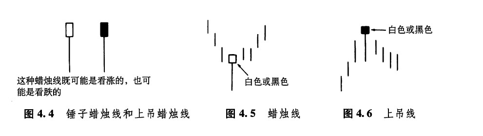
形状相同的蜡烛线，有时是看涨的，有时又是看跌的，看起来或许有些不合常情。但是，如果您熟悉西方技术分析理论中的岛形顶和岛形底，那就不难看出，在这个问题上，东西双方的思路如出一辙。对岛形反转形态来说，既可以是看涨的，也可以是看跌的，取决于它在市场趋势中所处的位置。如果岛形反转形态出现在长期的上升趋势之后，则构成看跌信号。如果岛形反转形态出现在下降趋势之后，则构成看涨信号。
我们可以根据三个方面的标准来识别锤子线和上吊线。
1.实体处于整个价格区间的上端。而实体本身的颜色是无所谓的。
2.下影线的长度至少达到实体高度的2倍。
3.在这类蜡烛线中，应当没有上影线，即使有上影线，其长度也是极短的。
在看涨的锤子线的情况下，或者在看跌的上吊线的情况下，其下影线越长、上影线越短、实体越小，那么，这类蜡烛线就越有意义。虽然锤子线或者上吊线的颜色既可以是白的，也可以是黑的，但是，如果锤子线的实体是白色的，其看涨的意义则更坚挺几分；如果上吊线的实体是黑的，其看跌的意义则更疲软一点。如果锤子线的实体是白色的，就意味着在当天的交易过程中，市场起先曾急剧下挫，后来却完全反弹上来，收市在当日的最高价处，或者收市在接近最高价的水平上。这一点本身就具有小小的看涨的味道。如果上吊线的实体是黑色的，就表明当日的收市价格无力向上返回到开市价的水平。这一点或许就有潜在的看跌意味。
当上吊线出现时，一定要等待其他看跌信号的证实，这一点特别重要。为什么呢？当中的缘由要从上吊线的形成过程说起。通常，在出现这种蜡烛线之前，市场充满了向上的冲劲。突然，上吊线出现了。在上吊线这一天，市场的开市价就是当日最高价（或者当日的开市价接近最高价）。之后市场一度剧烈下跌，后来再上冲，最后收市于最高价的水平，或者接近最高价的水平。从上吊线的价格演化过程本身看来，未必令人联想到顶部反转形态。然而，这个价格变化过程预示着，一旦市场遭到空方的打压，就会不堪一击，迅速引发市场的向下突破。
次日，如果市场开市在较低的水平，那么，凡是在上吊线当日的开市、收市时买进的交易商，现在统统背上了亏损的头寸，被“吊”在上面。综合上述分析，我们就得到了关于上吊线的一条普遍原则：上吊线的实体与上吊线次日的开市价之间向下的缺口越大，那么上吊线就越有可能构成市场的顶部。在上吊线之后，如果市场形成了一条黑色的实体，并且它的收市价低于上吊线的收市价，那么，这也可以看作上吊线成立的一种佐证。
图4.7所示的实例颇精彩，从中我们可以看到，同样一种蜡烛线，既可以是看跌的（如7月3日的上吊线），也可以是看涨的（如7月23日的锤子线）。尽管在这个实例中，上吊线和锤子线的实体都是黑色的，但是它们实体的颜色并没有太大意义。
图4.8是另一个实例，也显示出了这类蜡烛线的双重特性。如图所示，4月中旬有一个看跌的上吊线，它标志着市场先前的上涨行情的终止，而且这轮上涨行情是从4月2日的一条看涨的锤子线开始的。3月中旬，出现了另一个上吊线的变体。虽然这条变体上吊线的下影线也比较长，但未能达到实体高度的2倍。不过，另外两项标准它还是满足的（即它的实体位于当日价格区间的上端，并且它几乎没有上影线）。再往后看，次日的收市价低于这根蜡烛线的收市价，因而构成了它的验证信号。综合起来，尽管这条蜡烛线不是理想的上吊线，但它也是成立的。如图所示，这条蜡烛线确实成功地标志着起步于1个月之前的上涨行情的结束。蜡烛图技术为我们提供了一套图表分析要领，这一点与其他图表分析技术或者其他形态识别技术是一致的。然而，我们应当清楚地了解，这些要领并不是一成不变的定律。
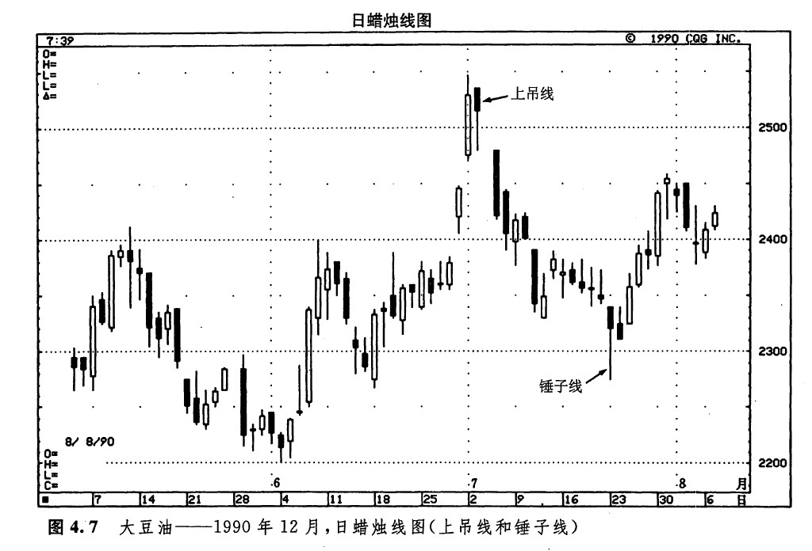
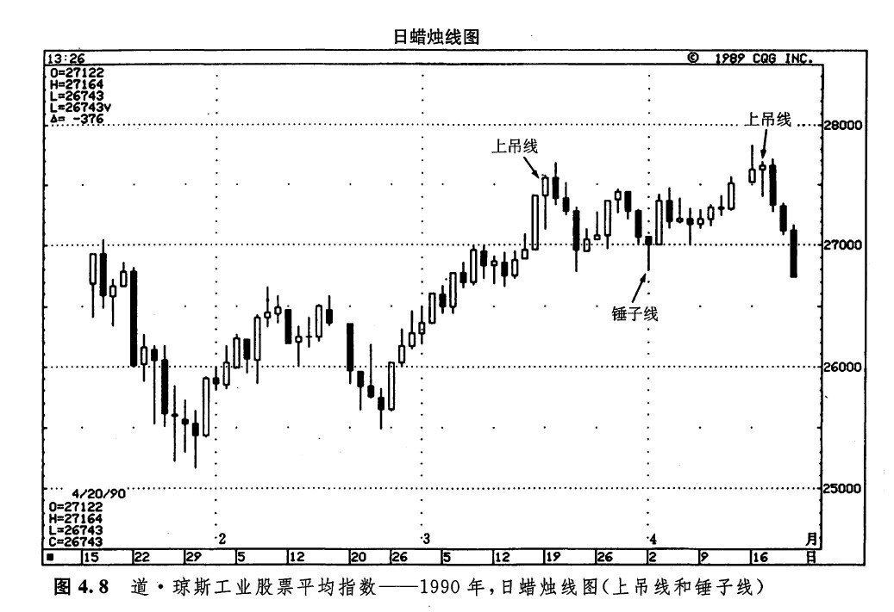
前面曾经交代，对上吊线和锤子线形态来说，特定的图形特征能够加强它们的技术意义。但是，正如本图3月中旬的上吊线所示，上吊线下影线的长度并不是非得达到实体高度的两倍不可，才足以构成反转信号。一般说来，在这类形态中，下影线越长，形态就越完美。
在图4.9所示的实例中，出现了一系列的看涨锤子线，我们用从1到4的数字给它们作了记号（锤子线2虽然有一段小小的上影线，但我们还是把它看作一根锤子线）。本例的有趣之处是这张图表于1990年初发出的那个买入信号。在锤子线3和锤子线4上，市场曾经两度向下越过了锤子线2处的7月份的低点，两度创出新的低价位（新低）。然而，熊方没能乘机扩大战果，继续把球控制在己方脚下。他们失了手，球丢了。这两条锤子线（3和4）表明，牛方重新执掌了市场的主动权。锤子线3并不是一条理想的锤子线，因为它的下影线达不到实体高度的2倍。但是，这条蜡烛线确确实实地显示，熊方没有能力维持新低价格水平。紧接着，下一周又是一根锤子蜡烛线，这就再度强调了如下的结论：很可能即将发生底部反转过程。
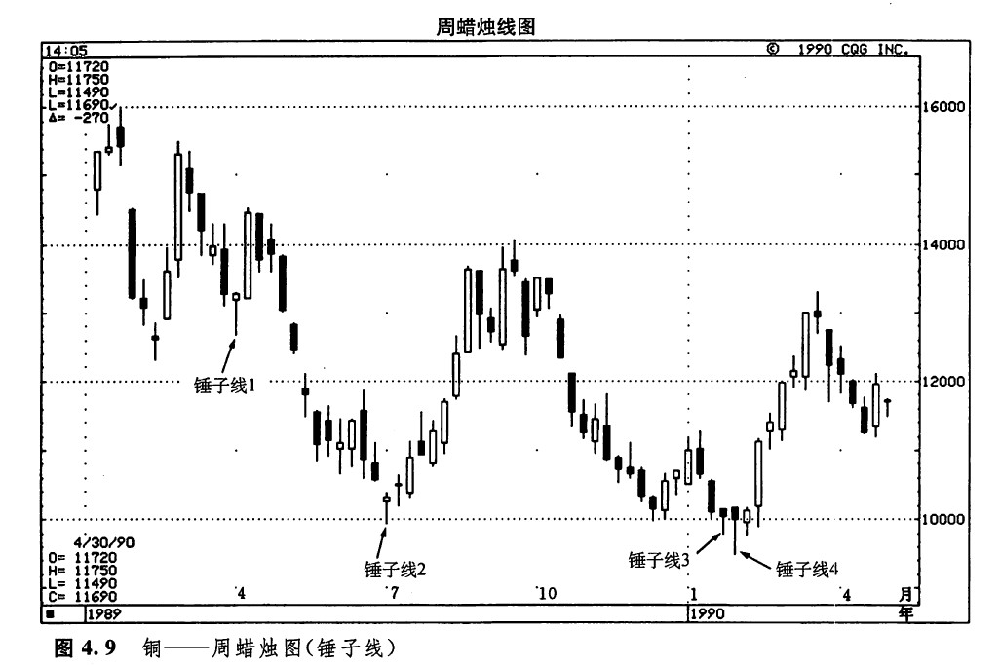
在图4.10中，锤子线1和3都属于底部形态。锤子线2标志着先前的下降趋势的结束，于是市场趋势从下降转为横向延伸。锤子线4未起作用。这条锤子线就引出了关于锤子线形态分析的一项重要的注意事项（其实，这也是我将讨论的所有其他形态的一个关键点）。只有把价格形态与它之前的价格变化相结合，进行通盘的考虑，才能准确把握价格形态的意义。带着这样的全局观，再来观察一下锤子线4。我们注意到，在这条锤子线的前一天，市场走出了一条极其疲软的蜡烛线。这是一条长长的、黑色的秃头秃脚蜡烛线（全秃蜡烛线，就是说，开市价位于当日最高处，收市价位于当日最低处）。这条蜡烛线清晰地说明，市场具有强劲的向下动力。此外，锤子线4也向下穿透了市场过去在1月24日建立起来的支撑水平。再考虑到前面所分析的看跌因素，那么，当锤子线4出现时，稳妥的做法是，先等一等其他验证信号，看看牛方是否确实已经重新占据了上风，然后见机而作。比如说，如果在锤子线4之后，再出现一根白色的蜡烛线，并且它的收市价高于锤子线4的收市价，那么，后来的这条蜡烛线就可以看作是一个验证信号。
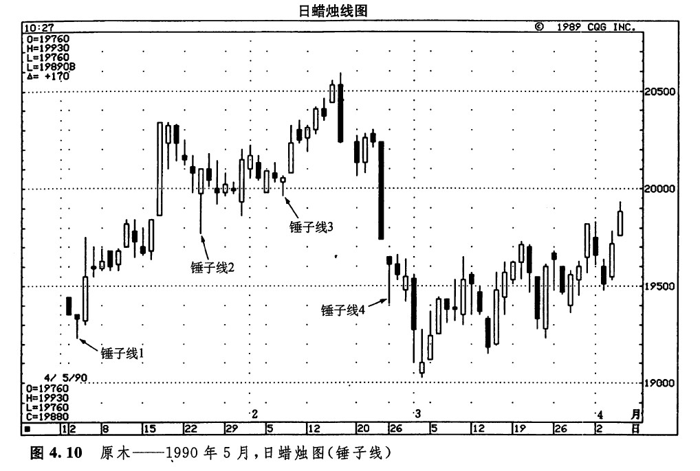
我们也可以采用蜡烛图形式来绘制日内时间单位的图表。在这种情况下，蜡烛线显示的是相应时间段内的最高价、最低价、最初价和最后价（如图4.11所示）。举例来看，如果我们以小时为基本时间单位，那么，每根蜡烛图线将采用相应一小时的最初价和最后价来绘制其实体，而用这一小时的最高价和最低价来绘制上下影线。如果我们仔细地观察这张图表，就会看到，在4月11日的头一个小时，市场形成了一根锤子线。与图4.10中的锤子线4一样，在这根锤子线处，市场也形成了一个向下的价格跳空。但是与之不同的是，在本锤子线之后，跟随着一根白色的蜡烛线，并且这根白色蜡烛线的收市价高于本锤子线的收市价。这对证实市场底部的形成是很有帮助的。
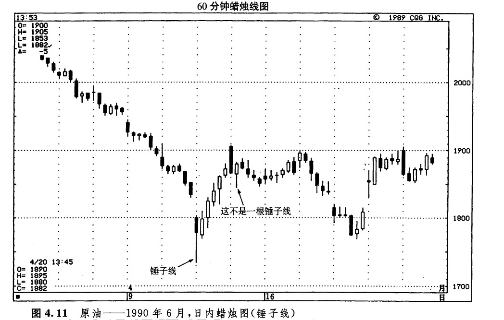
再看4月12日的第二根小时蜡烛线。虽然它的外形同锤子线有相似之处，但它并不是一根真正的锤子蜡烛线。锤子线属于底部反转形态。在锤子线的判别准则中，其中有一条是，在锤子线之前，必定先有一段下降趋势（哪怕是较小规模的下降趋势），这样锤子线才能够逆转这个趋势。这条蜡烛线也不是上吊线，因为上吊线必须出现在一段上升趋势之后。在本图所示的情况下，如果把这根蜡烛线提高到前一根黑色蜡烛线的顶部附近，那么，我们就可以将它判定为上吊线了。
在图4.12中，4月初有一根锤子线，它成功地预示了一轮持续数月的主要下降行情的终结。这根蜡烛线下影线很长（其长度是实体高度的许多倍），实体很小，又没有上影线，于是就成了一条经典的锤子线。
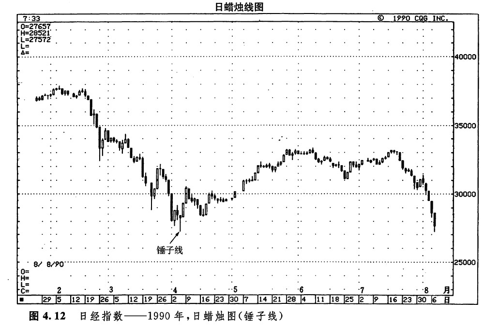
图4.13显示的是一例经典的上吊线形态。在上吊线出现的这一天，市场向上跳空开市，并由此创出了新的高价位（新高）。第二天，市场向下跳空，于是凡是在上吊线的开市或收市时买进的新多头，都被高高“吊起”，处于亏损状态。
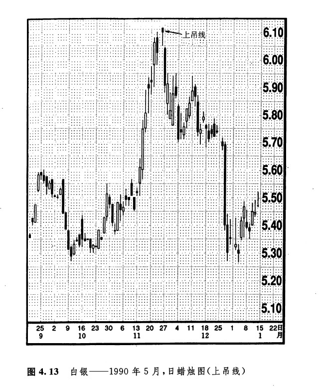
在图4.14中我们看到，自2月初开始的上升行情随着两条连续的上吊线的到来而宣告破产。在上吊线出现后，还需要其他看跌信号的验证。这一原则的重要性，在本图例中也得到了体现。在上吊线的看跌验证信号中，有一种情况是，次日的开市价低于上吊线的实体。这是为上吊线求得证实的第一个办法。请注意，当第一根上吊线出现后，次日市场是以较高的价格开市的。但是，在第二根上吊线之后，第二天市场终于开市在这条上吊线的实体之下，于是，市场便掉头下行了。
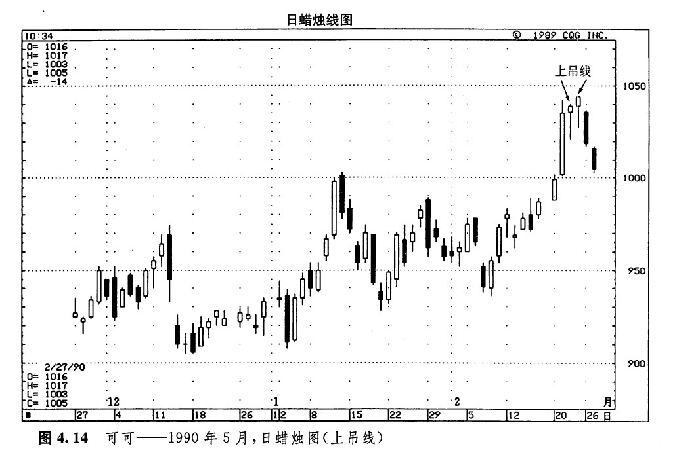
如图4.15所示，如果在上吊线之后，是一条具有黑色实体的蜡烛线，并且它的收市价低于上吊线的收市价，那么，这种情况也构成了上吊线的看跌验证信号。这是我们为上吊线求得证实的第二个办法。在本图例中，蜡烛线1、2和3形成了一系列上吊线。在上吊线1和2之后，均没有发生看跌验证信号，这就意味着在这两处，上升趋势依然处在照常发展的状态之下。
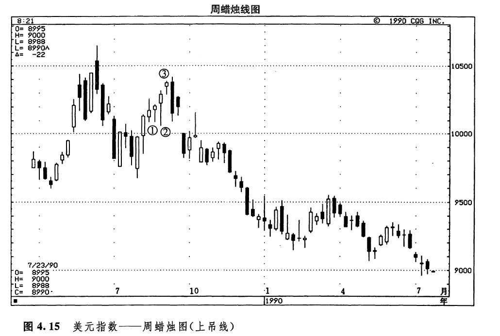
请注意上吊线3。接踵而来的那条黑色蜡烛线，为这条上吊线提供了看跌验证信号。在上吊线3的次日，虽然市场的开市价几乎没有变化，但是到收市的时候，那些在上吊线的开市或收市时买进的多头，已经统统给“上吊”在亏损状态了（在本例中，在次日这根长长的黑色蜡烛线上，市场的抛售过程激烈到了白热化的程度，以至于凡是在上吊线当日买进的人，不仅仅是那些在开市和收市买进的人，统统被套牢在亏损头寸里）。
图4.16所示，是橙汁市场的一个实例。从1989年底到1990年初，在本图上出现了一段触目惊心的上涨行情。请注意这场上升行情是在何处结束的。1990年的第三周是一根上吊线，挡住了上述涨势。本实例充分说明了下面这个要点：反转形态的出现，并不意味着市场必定向相反的方向逆转。这一点，我们在第三章曾经做过研究。准确地说，反转形态的出现，预示着之前的趋势即将发生变化。本图例中的情形，正是上述分析的现实体现。在图示的上吊线反转形态形成后，之前的上升趋势就结束了，市场演变成了新的横向延伸趋势。
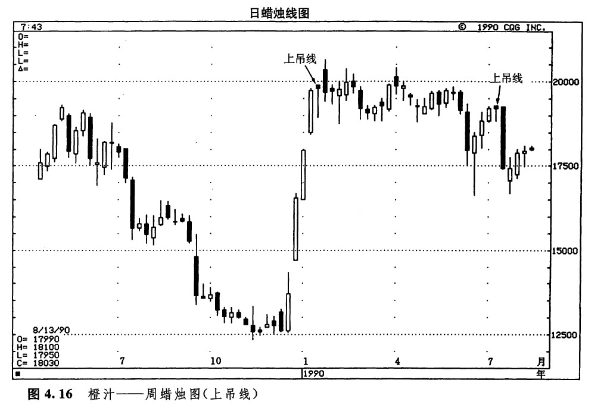
在本图例中，7月里出现了另一条上吊线。这一次，市场很快就从上升反转为下降。但是，正如我们前面曾经反复强调的，当遇上顶部反转形态时，我们不应当总是期待这种情景的出现。
在图4.17中，5月里显示出了一个经典的上吊线形态。从这个蜡烛线的形状来看，其实体极小、没有上影线、下影线很长。次日的黑色实体证实了这根上吊线的可靠性，提示我们，现在是出清多头头寸的时候了（请注意，在本图上，4月初有一个看涨的锤子线）。
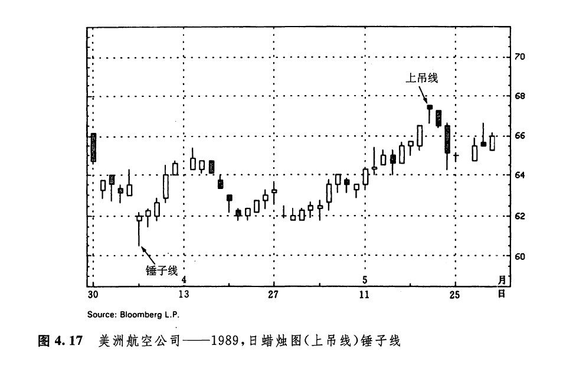
下一篇：吞没形态（抱线形态）
上一篇：第四章 反转形态